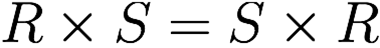
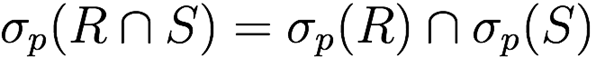

Advanced Databases Part 2
Matthew Barnes
Relational Algebra 2
Relational Transformations 5
Relational Algebra and SQL 6
Problems and Complexity in Databases 7
Relational calculus 8
List all the airlines 9
List the codes of the airports in London 10
List the airlines that fly directly from London to
Glasgow 11
Active domain 11
Conjunctive Query - Containment and Minimisation 12
Conjunctive queries 12
List all the airlines 13
List the codes of the airports 13
List the airlines that fly directly from London to
Glasgow 13
Homomorphism 14
Semantics of Conjunctive Queries 16
CQ problems 17
Homomorphism Theorem 18
Minimisation 21
Query Processing 23
Logical query plans 24
Cost Estimation 24
Query Optimisation 26
Physical query plans 29
Scanning 30
One-Pass Algorithms 30
Nested-Loop Joins 32
Two-Pass Algorithms 35
Index-based Algorithms 36
Data Integration 37
Query Rewriting 38
Global as View 40
Local as View 40
The Bucket Algorithm 42
Ontology Based Data Integration 44
Ontology-Based Query Answering (OBQA) 44
Universal Models 44
The Chase 44
Relational Algebra
-
A lot of the stuff in here just crosses over with Data Management.
-
To uphold brevity, I’m only going to note the stuff
that is new and can’t be found in Data
Management.
-
If you want a full refresher, read up on Data
Management’s topics:
-
“Relational Model > Relational Algebra”
and
-
“Data languages > Relational Algebra vs
SQL”
-
“Database Systems > Modelling and SQL basics >
Joins”
-
... and then come back. If you already know all that stuff,
read ahead!
-
Just quickly: relations are subsets of cartesian products of sets, and
records are represented as tuples.
-
Properties of relations:
-
Each row represents a k-tuple of R
-
The values of an attribute are all from the same
domain
-
Each attribute of each tuple in a relation contains a
single atomic value
-
The ordering of rows is immaterial (relations are just sets, so row order doesn’t
matter)
-
All rows are distinct (relations are sets, so there can be no duplicates)
-
Now, relations can come in two flavours: named perspective, or unnamed perspective.
-
Extra properties of named perspective:
-
Each column is identified by its name
-
The ordering of the attributes (columns) do not
matter
-
Extra properties of unnamed perspective:
-
The ordering of the attributes matter (so we can reference attributes by order, not by
name)
-
For an easy way to remember, just think like this: named perspective names the columns; unnamed perspective does not so it has
to use order.
-
There are k-ary relation schemas, that look like R(A1,A2,A3, ... AK)
-
R is the relation name
-
Ai are names of attributes
-
In a DBMS, they give types to the attributes too, like int
or string.
-
There are also relational database schemas that look like Ri(A1, A2, A3 ... Ak)
-
Ri are the names of the relations
-
Ai are names of attributes in Ri
-
Notice now it’s Ri and not R. That means there’s multiple relation schemas,
because it’s a relational database schema!
-
These schemas can be instantiated.
-
Instantiated relation schemas and relational database schemas are called relations and databases, respectively.
-
These concepts have names: intension and extension.
|
Intension
|
Extension
|
|
Relation Schema
|
Instance of a relation schema (Relation)
|
|
Relational Database Schema
|
Relational Database Instance (Database)
|
-
Intensions (schemas) do not change very much because
they’re like the blueprints; unless you’re
changing the business model, there’s no need to edit
it.
-
Extensions (instantiations) are very dynamic because
that’s the actual data; millions of inserts and
deletes are happening every second.
-
In relational algebra, we can use $ to distinguish
positions, for example in the relation R(A, B, C) then $1 is
A, $2 is B and $3 is C.
-
Relational Algebra operators come in groups.
-
Group 1: (three binary operations from set theory)
- Union
-
Difference
-
Cartesian Product
-
Group 2: (two unary operations on relations)
-
Depending on the variant of relational algebra we might need:
-
There’s also an operator for assigning names to
intermediary operations.
-
This can abstract huge operations using names.
-
These abstractions are called views.
-
It looks like this: ←
-
Here’s an example:
-
πfname,lname(σsalary>£40,000(Staff))
-
Here’s the same operation but broken down:
-
ExpensiveStaff
←
σsalary>£40,000(Staff)
-
Result
←
πfname,lname(ExpensiveStaff)
-
✅ Commutativity: R ⋃ S = S ⋃ R
-
✅ Associativity: R ⋃ (S ⋃ T) = (R ⋃ S) ⋃ T
-
❌ Commutativity: R - S ≠ S - R
-
❌ Associativity: R - (S - T) ≠ (R - S) - T (proof)
-
❌ Commutativity: R ⨉ S ≠ S ⨉ R
-
✅ Associativity: R ⨉ (S ⨉ T) = (R ⨉ S) ⨉ T
-
✅ Distributivity: R ⨉ (S ⋃ T) = (R ⨉ S) ⋃ (R ⨉ T)
-
✅ Commutativity: σΘ1(σΘ2(R)) = σΘ2(σΘ1(R))
-
σΘ1(σΘ2(R)) = σΘ1⋀Θ2(R)
-
σΘ(R ⨉ S) = σΘ(R) ⨉ S (if Θ mentions only attributes in R)
-
These rules can be used in query processing and
optimisation.
-
We can derive the intersection operation using
difference:
-
R ∩ S = R – (R – S) = S – (S – R)
-
Here’s some symbols for operations you already
knew:
-
A semijoin finds the records of the first relation that are within the
join of the first and second relations.
-
Alright, that’s a weird sentence to read, but once
you look at this example it’ll make sense:
|
|
Characters
|
|
Character
|
Stand ID
|
|
Jotaro Kujo
|
1
|
|
Polnareff
|
2
|
|
Jonathan Joestar
|
null
|
|
Gyro Zeppeli
|
4
|
|
|
Stands
|
|
Stand ID
|
Stand
|
|
1
|
Star Platinum
|
|
2
|
Silver Chariot
|
|
3
|
The World
|
|
|
Semijoin
|
|
Character
|
Stand ID
|
|
Jotaro Kujo
|
1
|
|
Polnareff
|
2
|
|
-
Here, the only records that come from the semijoin are
Jotaro and Polnareff because they’re the only ones in
the relation that have recorded stands.
-
If this were a join, Jotaro would’ve been paired up
with Star Platinum and Polnareff would’ve been paired
up with Silver Chariot. Since Jotaro and Polnareff
would’ve been in that join, they alone (and not their
stands) are returned in the resulting semijoin
relation.
-
A semijoin is defined like this:
Relational Transformations
-
Here are a bunch of transformations you can do in
relational algebra:
-
Conjunctive selections can cascade into individual
selections
-
Only the last in a sequence of projections is
required
-
Selection and projection are commutative (only if selection attributes are projected)

-
Cartesian product and theta join are commutative (only with named perspective)

-
Selection distributes over theta join (if predicate only involves attributes being joined)
-
Projection distributed over theta join (if relations have attributes that are being projected, and
join condition only uses those attributes)

-
Selection distributes over set operations

-
Projection distributes over set union
-
Associativity of theta join and cartesian product
-
Associativity of set union and intersection
Relational Algebra and SQL
-
This topic draws parallels between relational algebra and
SQL.
-
It talks about self-joins, aliases, multisets etc.
-
Again, if you don’t remember, refer to the Data Management Notes.
Problems and Complexity in Databases
-
To gauge how efficient our database operations are, we need
to calculate their complexities.
-
We can use complexity theory for this (you know, Big O and stuff)
-
In this chapter we will tackle two problems:
-
Formally: Given a database D, a query Q in L, and a tuple of constants t, is tQ(D)?
-
Informally: Let’s say I give you a record from a database, and
a query acting upon that database. If I got the output of
that query, would the given record be in that output?
-
Example: Say our database is {(‘a’, 1), (‘b’, 2)}, your given record is (‘a’, 1) and the query is SELECT * FROM database WHERE $1 = ‘a’. The answer to this QOT problem would be true, because we
would get our record (‘a’, 1) in that query.
-
Boolean Query Evaluation (BQE)
-
Formally: Given a database D, a query Q in L, and a tuple of constants t, is Q(D) ≠ Ø?
-
Informally: Let’s say you have a database and a query acting on
that database. If you got the output of that query, would it
have any tuples?
-
Example: Say our database is {(‘a’, 1), (‘b’, 2)}, and the query is SELECT * FROM database WHERE $2 = 3. The answer to this BQE problem would be false, because
there are no tuples (records) where the second element is
3.
-
There is a theorem that states QOT(RA) ≡L BQE(RA)
-
(≡L means logspace-equivalent)
-
There’s three ways to measure complexity in
databases:
-
Combined complexity: both D and Q are part of the input (you’re checking the complexity of both)
-
Query complexity: fixed D, input Q (you’re only checking the complexity of the
query)
-
Data complexity: input D, fixed Q (you’re only checking the complexity of the
database)
-
BQE is PSPACE-complete with combined complexity
-
BQE is PSPACE-complete when database is fixed (query
complexity)
-
BQE is LOGSPACE when query is fixed (data complexity)
-
When a problem is LOGSPACE, it is polynomial time as well
because there’s a polynomial number of
configurations.
-
So why are the BQE and QOT problems so easy when the query
is fixed, but not when the database is fixed?
-
The complexities of these problems are actually
exponential.
-
But the size of the query is the exponent (the small number
on top; the power)
-
So if the size of the query is fixed, the complexity
changes to polynomial.
-
There are some more problems that relate to
databases:
-
Formally: Given a query Q, is there a finite database D such that Q(D) ≠ Ø?
-
Informally: If you have a query, is it possible to find a database
where this query’s output will not be empty?
-
If the answer is no, then the query makes no sense and can
trivially be calculated as empty.
-
Formally: Given two queries Q1 and Q2, Q1(D) ≡ Q2(D)? (for every finite database D)
-
Informally: If you have two queries, are their outputs exactly the
same for every database?
-
If the answer is yes, then we can simply use the query that
is the easiest to calculate, even if it’s
syntactically a different query than the one we got.
-
Formally: Given two queries Q1 and Q2, Q1(D) ⊆ Q2(D)? (for every finite database D)
-
Informally: Given two queries, can all the outputs of the first query
be found in the outputs in the second query for all
databases?
-
If the answer is yes, we can approximate a query by picking
the other query that is a subset.
-
This sacrifices completeness with complexity.
-
They’re all undecidable, unfortunately...
-
... for relational algebra, that is!
-
There’s other relational query languages, such as
relational calculus.
-
Sublanguages of relational algebra can also make these
problems decidable, like only having select, project and
equijoin (like our SJDB coursework).
-
But for now we’ll look at relational calculus.
Relational calculus
-
Here’s a thought: if relations are just sets, and
queries return relations as output, why can’t we use
set comprehension as queries?
-
Relational calculus is like that: it’s very similar to set
comprehension in set theory.
-
Or, if you’ve ever done list comprehension or set
comprehension in Python, it’s like that.
-
The syntax is like this:
{x1, ..., xk | φ}
-
x1, ... xk are the values in our output tuples
-
φ is a formula that our values abide by
-
Makes no sense? Don’t worry, these examples will
clear things up.
-
Here’s a database we’re going to work
with:
|
|
Flight
|
|
Origin
|
Destination
|
Airline
|
|
VIE
|
LHR
|
BA
|
|
LGW
|
GLA
|
U2
|
|
LCA
|
VIE
|
OS
|
|
|
Airport
|
|
Code
|
City
|
|
VIE
|
Vienna
|
|
LHR
|
London
|
|
LGW
|
London
|
|
LCA
|
Larnaca
|
|
GLA
|
Glasgow
|
|
EDI
|
Edinburgh
|
|
-
If you don’t know what a plane is, these tables
represent flights that are going on in different airports.
Different airlines offer different flights between
airports.
- ✈️
List all the airlines
|
|
Flight
|
|
Origin
|
Destination
|
Airline
|
|
VIE
|
LHR
|
BA
|
|
LGW
|
GLA
|
U2
|
|
LCA
|
VIE
|
OS
|
|
|
Airport
|
|
Code
|
City
|
|
VIE
|
Vienna
|
|
LHR
|
London
|
|
LGW
|
London
|
|
LCA
|
Larnaca
|
|
GLA
|
Glasgow
|
|
EDI
|
Edinburgh
|
|
-
Query: {z | ∃x∃y Flight(x,y,z)}
-
English, please:
-
Let’s break this down.
-
The bit on the left of the bar, {z | ∃x∃y Flight(x,y,z)}, is what we want in our output. It is defined by the part
to the right of the bar. Basically, we want our output to be
a set of all the different values z could be.
-
The bit on the right of the bar, {z | ∃x∃y Flight(x,y,z)}, simply introduces some new variables for us to reason
with. It means that, within this formula, there exists
values for these variables that satisfy this query. If we
need new variables to use, but don’t want them in our
output, then “declare” them like this.
-
The bit on the far right, {z | ∃x∃y Flight(x,y,z)}, says that the values of variables x, y and z must be the
values of the tuples within Flight. For example, for one of
the possibilities, x = VIE, y = LHR and z = BA.
-
The output says we want all values that z satisfy, and
since the formula says z is the Airline column in Flight,
this query gets all the airlines.
-
This works the same as a projection.
-
πairline Flight
List the codes of the airports in London
|
|
Flight
|
|
Origin
|
Destination
|
Airline
|
|
VIE
|
LHR
|
BA
|
|
LGW
|
GLA
|
U2
|
|
LCA
|
VIE
|
OS
|
|
|
Airport
|
|
Code
|
City
|
|
VIE
|
Vienna
|
|
LHR
|
London
|
|
LGW
|
London
|
|
LCA
|
Larnaca
|
|
GLA
|
Glasgow
|
|
EDI
|
Edinburgh
|
|
-
Query: {x | ∃y Airport(x,y) ⋀ y = London}
-
English, please:
-
Airport(x,y) means that the variables x,y relate to the attributes
in the tuples of Airport, meaning x are values of Code and y
are values of City.
-
y = London means that y must have the value of London. Since the
formula before said that y must have values of City, this
limits our output relation to only having the city of
London.
-
Since the output is x, and the first formula defined x to
be the codes of the Airport, those codes will be our output.
Since y is limited to just the value of London, the output
will be the airport codes within London.
-
This works the same as a projection and selection.
-
πcode (σcity=’London’ Airport)
List the airlines that fly directly from London to
Glasgow
|
|
Flight
|
|
Origin
|
Destination
|
Airline
|
|
VIE
|
LHR
|
BA
|
|
LGW
|
GLA
|
U2
|
|
LCA
|
VIE
|
OS
|
|
|
Airport
|
|
Code
|
City
|
|
VIE
|
Vienna
|
|
LHR
|
London
|
|
LGW
|
London
|
|
LCA
|
Larnaca
|
|
GLA
|
Glasgow
|
|
EDI
|
Edinburgh
|
|
-
Query: {z | ∃x∃y∃u∃v Airport(x,u)
⋀
u = London ⋀
Airport(y, v) ⋀
v = Glasgow ⋀
Flight(x,y,z)
}
-
The first two, Airport(x,u) ⋀ u = London, defines that x and u are codes and cities, and that the
only cities that u should inhibit is London.
-
The next two, Airport(y,v) ⋀ v = Glasgow, defines that y and v are codes and cities, and that the
only cities that v should inhibit is Glasgow. Keep in mind
that this is completely separate to what we did with x and
u.
-
The last one, Flight(x,y,z), says that we’re only focusing on the flights from x
to y, and using z to store the airlines. Since u has to be
London and v has to be Glasgow, going from airports x to y
must be going from London to Glasgow.
-
Since the output is z, we are getting the airlines of
flights that go from airports located in London to
Glasgow.
-
This works the same as a join.
-
πairline ((Flight ⋈origin=code (σcity=’London’ Airport)) ⋈destination=code ((σcity=’Glasgow’ Airport))
Active domain
-
Relational calculus is cool and all, but there are some
problematic queries.
-
We’ve been using “there exists”, but what
about “for all”?
-
{x | ∀y R(x,y)}
-
How is this calculated?
-
This means “get all values of x such that they are
connected to all values of y”
-
As opposed to “get all values of x such that they are
connected to some values of y” (for the “there exists” operator)
-
What does it mean “all values” of y?
-
It means all values in the active domain.
-
The active domain is the set of all values in the relation
at that current point in time. No outside values; no
possible values we can think of. This means the domain is
always closed.
-
If we look at an example, it’ll make more
sense.
-
dom = {1,2,3}
-
D = {R(1,1), R(1,2)}
-
{x | ∀y R(x,y)} → {}
-
Here, the query has no output.
-
1 can map to 1 and 2, but it can’t map to 3.
-
2 doesn’t map to anything, and 3 doesn’t map to
anything.
-
So there can be no value of x that maps to every value of y.
-
Here’s another example:
-
dom = {1,2}
-
D = {R(1,1), R(1,2)}
-
{x | ∀y R(x,y)} → {1}
-
Here, the domain has changed to just 1 and 2.
-
2 still doesn’t map to anything, but 1 now maps to 1
and 2.
-
1 can map to any value in the domain!
-
That means 1 is a possible value for x, since it can map to
any y value.
-
By changing the domain like this, we can make or break
these queries. This is why we use the active domain.
-
A theorem states that relational algebra (RA), domain relational calculus (DRC) and tuple relational calculus (TRC) are all equally expressive.
-
What is tuple relational calculus?
-
It’s a declarative language introduced by Codd. It
predates domain relational calculus.
Conjunctive Query - Containment and Minimisation
Conjunctive queries
-
Conjunctive Queries (CQ) are yet another query language that we can use.
-
It’s called that because it is expressed as a set of
atoms.
-
In practice, you can think of it as syntactic sugar for
relational calculus.
-
However, it’s more powerful, even though it’s
less expressive.
-
It’s syntax goes like this:
Q(x) := ∃y (R1(v1) ∧ ... ∧ Rm(vm))
-
Ri (1 ≤ i ≤ m) are relations
-
x, y, v1, ... vm are tuples of variables
-
Each variable mentioned in vi (1 <= i <= m) appears in either x or y
-
The variables in x, which are free, are called distinguished variables
-
Conjunctive queries have a form that use rule-based queries
that look like this:
Q(x) :- R1(v1) ∧ ... ∧ Rm(vm)
-
This is very similar to before, but less verbose and
doesn’t require existential quantifications (like
“for all” and “there exists”).
-
The body of Q can be seen as a set of atoms.
-
The (x) bit in Q(x) can also be called the head.
-
Let’s convert the relational calculus examples into
conjunctive queries for our examples!
List all the airlines
-
Relational calculus: {z | ∃x∃y Flight(x,y,z)}
-
Conjunctive queries: Q(z) :- Flight(x,y,z)
-
Explanation:
-
Here, instead of putting our output variables to the left
of the bar, we put it as a parameter of query Q. In this
case, that’s z.
-
In the rule-based query form, we don’t need the
“there exists” quantification.
-
Everything else is much of the same.
List the codes of the airports
-
Relational calculus: {x | ∃y Airport(x,y) ⋀ y = London}
-
Conjunctive queries: Q(x) :- Airport(x,y), y = London
-
Explanation:
-
It’s pretty much the same as the last example, except
we can also have invariants for the variables, like with y =
London.
-
However, what if I told you we don’t even need
that?
- Behold!
-
Conjunctive queries: Q(x) :- Airport(x,London)
-
With conjunctive queries, we don’t need to create a
variable and define it just to limit an attribute in
Airport; we can just state the value.
List the airlines that fly directly from London to
Glasgow
-
Relational calculus: {z | ∃x∃y∃u∃v Airport(x,u)
⋀
u = London ⋀
Airport(y, v) ⋀
v = Glasgow ⋀
Flight(x,y,z)
}
-
Conjunctive queries: Q(z) :- Airport(x,London),
Airport(y,Glasgow),
Flight(x,y,z)
-
Much like before, we don’t need to define variables
just to limit attributes.
-
The conjunctive query is a lot more succinct here: the
first atom says that x is an airport based in London, the
second atom says that y is an airport based in Glasgow, and
the third atom says that z is an airline that has a flight
from x to y.
Homomorphism
-
A homomorphism is a substitution that converts a set of atoms from one
conjunctive query into a set of atoms from another
conjunctive query, while preserving structure.
-
It is a substitution from a set of atoms A to a set of
atoms B, h : terms(A) → terms(B) such that:
-
t is a constant ⇒ h(t) = t
-
R(t1, ..., tk) ∈ A ⇒ h(R(t1, ..., tk))
-
h(R(t1, ..., tk)) = R(h(t1), ..., h(tk))
-
R(h(t1), ..., h(tk)) ∈ B
-
Where terms(A) = {t | t is a variable or constant that occurs in A}
-
If it’s still confusing, let me give you an
example:
-
S1 = {P(x,y), P(y,z), P(z,w)}
-
S2 = {P(x,y), P(y,z), P(z,x)}
-
We can define a homomorphism ‘h’ from S1 to S2 as {x → x, y → y, z → z, w → x}
-
h(S1) = {h(P(x,y)), h(P(y,z)), h(P(z,x))}
= {P(h(x),h(y)), P(h(y),h(z)), P(h(z),h(x))}
= {P(x,y), P(y,z), P(z,x)}
-
All the elements of h(S1) also belong to S2. Therefore h is a homomorphism from S1 to S2.
-
Note: In these notes, when I define a homomorphism, I’ll
often omit the direction of the mapping for the sake of
making the explanation easier (e.g. S1 to S2). However, if you’re writing them out in an exam or
something, you must explicitly state what the homomorphism is mapping to and
from where. Otherwise, it can be ambiguous, and probably
won’t even be a proper homomorphism.
-
Let’s try a more trivial one.
-
S1 = {P(x,y), P(y,x), P(y,y)}
-
We can define h as {x → x, y → x}
-
h(S1) = {P(x,x), P(x,x), P(x,x)} = {P(x,x)}
-
Again, all elements of h(S1) also belong to S2, so h is a homomorphism from S1 to S2.
-
If you want to think of it a bit more graphically, try it
this way:
-
You have a graph. Your objective is to make your graph look
like the other graph, or at least be a “subset”
of it.
-
You can change the nodes to other values
-
If you change a node to another node value that already
exists, you can “merge” it with that node (if you change w to x, you can “merge” the w
node into the x node)
-
You can also “split” nodes if a transition is
bidirectional, but you can’t leave any duplicate
nodes
-
Wanna try an example, but graphically?
-
S1 = {P(x,y), P(y,z), P(z,x)}
-
S2 = {P(x,y), P(y,x), P(y,y)}
-
First of all, we can see that there is a loop in y in the
second graph. In the first graph, y goes to z. This means we
should change z to y, so that y can loop.
-
Since we have two y’s, we can “merge”
them together. The first y points to the other y, so
that’ll create a loop, and the second y points to x.
Since x also points to the first y, that’ll create a
bidirectional transition.
-
I’d say that looks like our second graph! Therefore a
homomorphism exists.
-
All we did was change z to y, so our only mapping will be z
→ y. Everything else will be the identity function,
making our h = {x → x, y → y, z → y}
-
This method is only really for visualising a homomorphism;
for actually calculating one, it’s probably best if
you just write it. But I don’t know. Maybe you like
doing things this way. Whatever gets you that 1st.
Semantics of Conjunctive Queries
-
A match is a homomorphism from a conjunctive query to a
database.
-
It maps the variables in the body of the conjunctive query
to values in the database.
-
Think of it like one of the outputs of the query.
-
Formally, it goes like this:
-
Q(x1, ..., xk) :- body
-
Let there be database D
-
Match is homomorphism h such that h(body) ⊆ D
-
Say we have a database with some records:
-
School(Student(Name, Age, ClassID), Class(ClassID, ClassName))
-
Student(“Matthew”, 21, 13)
-
Student(“John”, 24, 14)
-
Student(“Giorno”, 15, 14)
-
Class(13, “Computer Science”)
-
Class(14, “Biology”)
-
We also have a conjunctive query:
-
Q(Name) :- Student(Name, BioID), Class(BioID,
“Biology”)
-
We can match the variables of the conjunctive query to
values in the database to create a match:
-
{Name → “Giorno”, BioID → 14}
-
That’s one possible match!
-
There is one other possible match, you know.
-
{Name → “John”, BioID → 14}
-
So each individual query result is a match, but what do we
call all the possible matches?
-
I thought you’d never ask...
-
The answer to a conjunctive query over a database is the set of
k-tuples, where each tuple is the result of a match mapping
each conjunctive query atom to its database
counterpart.
-
Formally, it goes like this:
-
Q(D) := {(h(x1),…, h(xk)) | h is a match of Q in D}
-
Here’s an example, following that school one I
defined before:
-
This is the query in question:
-
Q(Name, Age) :- Student(Name, BioID), Class(BioID,
“Biology”)
-
These are the two matches that this query has in the
database:
-
h1 = {Name → “Giorno”, Age → 15,
BioID → 14}
-
h2 = {Name → “John”, Age → 24,
BioID → 14}
-
So we just run the matches on the atoms in the query:
-
{ (h1(Name), h1(Age)), (h2(Name), h2(Age)) }
-
{ (“Giorno”, 15), (“John”, 24) }
CQ problems
-
For CQs, the problems are a little bit better:
-
BQE(CQ) is NP-complete (combined complexity)
-
BQE[D](CQ) is NP-complete, for fixed database (query complexity)
-
BQE[Q](CQ) is LOGSPACE, for a fixed query (data complexity)
-
Why BQE and BQE[D] are NP:
-
To solve, go through every possible substitution of h : terms(body) → terms(D) and check if it’s a match of Q in D
-
Basically, use brute force
-
Why BQE and BQE[D] are NP-hard:
-
Reduction from 3-colourability
-
Let’s say we have an undirected graph G with edges
and nodes.
-
Let’s say the query QG has a match if D satisfies 3-colourability.
-
If the graph G is 3-colourable, there must be a
homomorphism from this graph to a cycle that just loops red
→ blue → green.
-
In other words, there must be a match of QG in D = {E(r,g), E(g,b), E(b,r)}
-
It’s hard to think of it in just words: let’s
have a visual example!
-
Here’s our graph G:
-
That looks pretty 3-colourable to me. In fact, it’s
already 3-coloured!
-
So according to this proof, there must be a homomorphism
from this graph to a loop that goes red → blue →
green (or just cycles any pattern of those three
colours).
-
Why, yes there is!
-
{1 → a, 2 → b, 3 → c, 4 → a, 5 →
c, 6 → a}
-
They all just map to their colour equivalents.
-
All the reds map to a, all the greens map to b and all the
blues map to c.
-
Therefore, if we can find a homomorphism in polynomial time
(find if a match exists for QG in D through a BQE algorithm), then we can solve
3-colourability in polynomial time.
-
BQE[Q] with CQ is LOGSPACE because BQE[Q] with domain relational calculus is also LOGSPACE.
-
A canonical database of a query Q is a database of which the homomorphism of Q on the
database is the identity function.
-
It’s syntax is like this: D[Q] (this says “D, the canonical database of
Q”)
-
You can create one from a query Q by taking every variable x and mapping it to a new constant like x’
-
This process is called “freezing”.
- Example:
-
Given Q(x,y) :- R(x,y), P(y,z,w), R(z,x)
-
Then D[Q] = {R(x’, y’),
P(y’,z’,w’), R(z’, x’)}
-
Note: the mapping of variables to new constants is a bijection,
e.g. for all x → x’, then you can do x’ → x
-
This also means if you have a canonical database, you can
get the query it was defined from too!
-
So why did I tell you this?
-
The concept of canonical databases solves one of the
problems we’ve seen!
-
Satisfiability (SAT) of CQs can be solved using canonical databases.
-
If you have a conjunctive query Q, there will always be a
database that satisfies it because every conjunctive query
has a canonical database.
-
Therefore satisfiability of CQs is constant time, because
it’s always true!
-
Equivalence (EQUIV) and Containment (CONT) of CQs:
-
Keep in mind these rules only work for conjunctive
queries!
-
We can turn an equivalence problem into a containment
problem by:
-
Q1 ≡ Q2
- →
-
Q1 ⊆ Q2 and Q2 ⊆ Q1
-
We can turn a containment problem into an equivalence
problem by:
-
Q1 ⊆ Q2
- →
-
Q1 ≡ (Q1 ∧ Q2) (this means if Q1 is equivalent to itself and Q1 conjuncted with Q2)
-
Because of this, we only need to worry about CONT, and
EQUIV can follow.
Homomorphism Theorem
-
A containment mapping or query homomorphism is simply a homomorphism from query to query.
- Formally:
-
Q1(x1, ..., xk) :- body1
-
Q2(y1, ..., yk) :- body2
-
h : terms(body1) → terms(body2)
-
Such that:
-
h is homomorphism from body1 to body2
-
(h(x1), ..., h(xk)) = (y1, ..., yk)
-
The homomorphism theory states that for any two conjunctive queries Q1 and Q2, if Q1 ⊆ Q2, there exists a containment mapping from Q2 to Q1, and vice versa.
-
Here’s a little example to help with
visualisation:
-
Q1(x,y) :- R(x,z), S(z,z), R(z,y)
-
Q2(a,b) :- R(a,c), S(c,d), R(d,b)
-
We know that Q1 ⊆ Q2 because there is a homomorphism from Q2 to Q1:
-
h = {a → x, b → y, c → z, d → z}
-
There is no homomorphism from Q1 to Q2, so Q1 ⊂ Q2
-
Is there a proof of this?
-
Why, yes there is! Two, in fact, that go both ways.
-
Note that I’m only going to explain the high-level
ideas; if you’re really a masochist for mathematical
syntax, check out the slides; it’s full of it.
-
Q1 ⊆ Q2 ⇒ Homomorphism from Q2 to Q1
-
We can get the canonical database of Q1 by writing D[Q1]
-
There is an answer to Q1 over D[Q1] (trivially)
-
Since Q1 is a subset of Q2, that means that same answer will work for Q2 upon D[Q1]
-
If Q2 has an answer for D[Q1], that must mean there is a homomorphism from Q2 to D[Q1]
-
But since D[Q1] is essentially a copy-paste of Q1, then Q2 also has a homomorphism to Q1.
-
Homomorphism from Q2 to Q1 ⇒ Q1 ⊆ Q2
-
Let’s say we have a database D, and there is a tuple t such that t ∈ Q1(D) (tuple t is one of the matches that Q1 has over D)
-
To complete this proof, we need to show that t ∈ Q2(D) (tuple t is also one of the matches that Q2 has over D)
-
Since there is a homomorphism h from Q2 to Q1, we can convert the body of Q2 to the body of Q1.
-
Since there is a match from Q1 to D, that means there is a homomorphism from Q1 to D (because that’s what a match basically is:
a homomorphism). We’ll call it g
-
Now we can use h to get from the body of Q2 to the body of Q1, and then we can use g to get to the body of Q1 to the database D.
-
That implies there is at least one tuple t that is from the body of Q2 and the body of Q1 which can be mapped to database D.
-
If tuple t is from the body of Q2 and Q1, that means t ∈ Q2(D) and t ∈ Q1(D), respectively.
-
That’s amazing! So if we find a homomorphism from
Q2 to Q1, we can basically solve CONT, and in turn, EQUIV.
-
One small problem though: deciding whether a homomorphism
exists is NP-complete.
-
Why it’s NP: iterate through all possible substitutions, looking for a
valid homomorphism
-
Why it’s NP-hard: reduction from BQE(CQ)
-
You have queries Q1 and Q2
-
If you have an algorithm that can find homomorphisms in
polynomial time, you can find a homomorphism from Q2 to Q1 in polynomial time.
-
You can also find a homomorphism from Q2 to D[Q1] in polynomial time, or Q1 to D[Q2] in polynomial time, so you could effectively use that to
solve BQE(CQ) with Q upon D, where D is the canonical database of some
query.
-
Because of the homomorphism theory, if finding a
homomorphism for CQs is NP-complete, that means EQUIV(CQ) and CONT(CQ) are also NP-complete.
-
Here’s a graph of all the problems we’ve seen
so far in complexity groups:
-
How do we minimise a conjunctive query?
-
A conjunctive query Q1 is minimal if there is no other CQ Q2 such that:
-
Q1 ≡ Q2
-
Q2 has fewer body atoms than Q1
-
So when we minimise a query, we’re computing the
minimal queries that are still equivalent to the original
query.
-
We can exploit the homomorphism theory a little to help
us:
-
Let’s say we have a CQ Q1(x1, ..., xk) :- body1
-
Q1 is equivalent to Q2(y1, ..., yk) :- body2 where |body2| < |body1|
-
Because they’re equivalent, there’s a
homomorphism from Q1 to Q2.
-
But equivalency works both ways: there’s also a
homomorphism from Q2 to Q1!
-
But Q2 has less atoms than Q1. If we go from Q1 to Q2 to Q1 again, we’ll end up with less atoms than
before.
-
In other words, this means there exists a query Q1(x1, ..., xk) :- body3 ...
-
... such that body3 ⊆ body1
-
This theorem, in a nutshell, states that all we need to do
is remove atoms from the body. No need for any weird
substitution!
-
Here’s some pseudocode for minimisation:
|
Minimization(Q(x) :- body)
Repeat until no change
choose an atom α ∈ body
if there is a containment mapping from Q(x) :- body to Q(x) :- body ∖ {α}
then body := body ∖ {α}
Return Q(x) :- body
|
-
Note: if there is a query homomorphism from Q(x) :- body to
Q(x) :- body \ {α}, then the two queries are
equivalent because there is a trivial containment mapping
from the latter to the former query (it’s simply the identity function).
-
What was that? You wanna see this in action?
-
Here you go:
-
You might think you can reduce it further by turning R(x,b)
to R(a,b) through x → a, but that’s not valid
because x is a distinguished variable (it’s in the output).
-
Here’s a question: does the order in which we remove
the atoms matter?
- No.
-
No matter what path you’re on, if you’re not at
a minimal query, there will always be a more minimal query
below you that you’re equivalent to.
-
Because of the theorem above, that “more
minimal” query is just the query you’re on, but
with lesser atoms.
-
So it’s impossible to hit a “dead end”
when going through this minimisation tree (unless you’re at a minimal query).
-
Here’s another theorem to think about:
-
Let’s say you have a conjunctive query Q.
-
You have two more, Q1 and Q2, that are minimal conjunctive queries.
-
If Q1 ≡ Q and Q2 ≡ Q, then Q1 and Q2 are isomorphic.
-
That means they’re identical, and that they only
differ by variable renaming.
-
So semantically, Q1 and Q2 are exactly the same.
-
Because of this theorem, every query has one and only one
minimal conjunctive query (semantically speaking).
-
This is called the core of Q.
Query Processing
-
If you’ve already done the coursework, the first half
of this topic should be straightforward.
-
When you perform a query on a database, it goes through
different levels:
-
When the query is parsed, a logical query plan is created.
-
This is a plan of the relational algebra operators to use
to perform your query.
-
It’s abstract and high-level.
-
Once that is made, a physical query plan is created.
-
This is a plan of all the algorithms the RDMS is going to
use to perform all those logical operations. It’s
low-level.
-
Optimisation takes place in both of these plans; they both
need optimising, but they are optimised in different
ways.
Logical query plans
-
In order to optimise, we need to begin with an inefficient
“starting point” that we need to improve
upon.
-
This is our canonical form, which is a standard way of representing a query as a
logical query plan.
-
In a canonical query plan, all the projects sit at the top,
the selects are all daisy chained using “and”
operators, and all the relations are connected left-deep
using products.
Cost Estimation
-
We can estimate the cost of a plan by giving a cost to each
operator in terms of the size, and the number of unique
values, of the relations on which it operates.
-
Then, we can pick query plans that minimise this
cost.
-
We calculate cost using:
-
T(R) -
Number of tuples in relation R (cardinality of R)
-
V(R,
A) - Number of distinct values for attribute A in relation
R
-
Note: for any relation R, V(R, A) < T(R) for all attributes A on R
-
Here’s how we can estimate the cost of each
operator:
|
Scan
|
T(scan(R)) = T(R)
For all A in R, V(scan(R), A) = V(R, A)
|
|
Product
|
T(R ✕ S) = T(R)T(S)
For all A in R, V(R ✕ S, A) = V(R,A)
For all B in S, V(R ✕ S, B) = V(S,B)
|
|
Projection
|
T(πA(R)) = T(R)
For all A in R and πA(R), V(πA(R),A) = V(R,A)
This assumes that the projection does not
remove duplicate tuples (so value count remains the same)
|
|
Selection attr=value
|
T(σA=c(R)) = T(R) / V(R,A)
V(σA=c(R),A) = 1
Assumes all values of A appear with equal
frequency
|
|
Selection
attr=attr
|
T(σA=B(R)) = T(R) / max(V(R,A), V(R,B))
V(σA=B(R),A) = V(σA=B(R),B) = min(V(R,A), V(R,B))
Assumes that all values of A and B appear with
equal frequency
Note: for all other attributes X of R, you can
reduce it to V(R, X) because it’s not being acted
upon
|
|
Selection
Inequality
|
T(σA<c(R)) = T(R) / 3 (as a rule of thumb)
May be different if range of values and
distribution is known
|
|
Selection
Conjunction / Disjunction
|
T(σA=c1∧B=c2(R)) = (and)
T(σA=c1∨B=c2(R)) =+ (or)
|
|
Join
|
T(R⋈A=BS) = T(R)T(S) / max(V(R,A), V(S,B))
T(R⋈R1=S1∧R2=S2S) =
T(R)T(S) / max(V(R,R1), V(S,S1))
V(R⋈A=BS,A) = V(R⋈A=BS,B) = min(V(R,A), V(S,B))
|
-
Throughout these formulae, we’ve assumed that all
values have equal frequency.
-
However this is unrealistic and can give us inaccurate
estimates.
-
We can calculate cost based on some other approaches based
on histograms:
-
Equal-width: divide the attribute domain into equal parts, give tuple
counts for each (e.g. split integer attribute A into categories 1-10,
11-20, 21-30, give tuple counts for each)
-
Equal-height: sort tuples by attribute, divide into equal-sized sets of
tuples and give maximum value for each set (e.g. integer attribute A is split into categories 1-5,
6-12, 13-30, where each category has the same number of
tuples)
-
Most-frequent values: give tuple counts for top-n most frequent values
-
Here’s an example of equal-width:
-
We have a relation R(A, B, C) with 10,000 tuples.
-
The following is an equal-width histogram on A:
|
Range
|
[1,10]
|
[11,20]
|
[21,30]
|
[31,40]
|
[41,50]
|
|
Tuples in range
|
50
|
2,000
|
2,000
|
3,000
|
2,950
|
-
What is T(σA=10(R))?
-
We need to find how many tuples are equal to 10 in the
range [1,10], which we can do by doing 50 * (1 / 10)
-
Therefore the answer will be 5 tuples.
Query Optimisation
-
How do we optimise a query?
-
We go through these steps:
-
Start with canonical form
-
Let’s start with a database:
-
Here is our canonical form tree of a query:
-
In case you haven’t noticed, everything is going to
be from the slides.
-
Move σ operators down the tree
-
We move the σattr=val operations just above the relations that contain the
attribute.
-
We move the σattr=attr operations just above the product that introduces
those two attributes to the relation.
-
Reorder subtrees to put most restrictive σ
first
-
Reorder the subtrees to put the most restrictive relations
(fewest tuples) first
-
For the sake of simplicity, we can keep it left-deep
-
Combine × and σ to create ⨝
-
If there is a product and a select above it, we can convert
it into a join.
-
Move π operators down the tree
-
We can use projections to only project the attributes we
need.
-
By reducing the degree (or arity) of the relations, we can
use fewer buffer frames.
-
After all that, we’ve successfully optimised our
logical query plan!
Physical query plans
-
So now we have an optimised logical query plan.
-
How do we execute these operations?
-
There’s a wide range of algorithms to choose from:
what are they and which do we pick?
-
It depends on stuff like:
-
Structure of relations
-
Size of relations
-
Presence of indexes and hashes
-
To pick the best algorithm, we need to quantise its
effectiveness.
-
Therefore we need a “cost”.
-
The cost can be the number of disk accesses the algorithm
makes.
-
We make the assumption that the arguments of the operator
(all the relations and stuff) are on disk, and the results
are on main memory.
-
We won’t care about memory accesses because
they’re so much faster than disk accesses, it’s
practically negligible.
-
Here are the cost parameters we will be using:
-
M -
Main memory available for buffers
-
S(R) - Size of a
tuple of relation R
-
B(R) - Blocks
used to store relation R
-
T(R) - Number of tuples in relation R (cardinality of R)
-
V(R,a) - Number of distinct values for attribute a in relation R
-
On disk, we don’t just store a huge bank of tuples in
one giant blob.
-
We store tuples into blocks, and then we can fetch those
blocks instead of individual tuples.
-
There’s two ways of doing this:
-
Clustered File (non-clustered relations)
-
Tuples from different relations, that are joined on
particular attribute values, are put together into the same
blocks.
-
[R1 R2 S1 S2] [R3 R4 S3 S4]
-
They might not be joined; the point is, all the tuples in a
block don’t have to be from the same relation.
-
Clustered Relation (also called contiguous)
-
Tuples from the same relation are also put into the same
blocks.
-
[R1 R2 R3 R4] [S1 S2 S3 S4]
-
The point is, all tuples in a block are from the same
relation.
-
We can also get something called a clustering index, which allows tuples to be read in an order that
corresponds to physical order.
-
This index is stored on disk, and simply points to the
blocks that contain the tuples we want to get.
Scanning
-
Scanning is exactly what you think it is: an iteration over all
tuples in a relation R, checking for tuples that satisfy
some predicate.
-
You could use scanning for certain binary queries.
-
It can also be used by the later algorithms to fetch blocks
that hold needed tuples.
-
There’s two kinds of scanning:
-
Table scan
-
All the tuples we want to scan are in blocks.
-
We already know those blocks (perhaps they’re stored in some kind of table), but we need to load them from disk one at a time.
-
The number of disk accesses is B(R), because we need to
load all the blocks that have relation R records.
-
However, if R is not clustered, there is a worst-case
scenario.
-
What if our blocks are like this?
-
[R1, S1, S2, S3]
-
[R2, S4, S5, S6]
-
[R3, S7, S8, S9]
-
There’s only one relation from R in every
block!
-
Therefore the number of disk accesses will be T(R), because
we’ll need to read one block for every tuple.
-
Index scan
-
We have an index on some attribute of R.
-
Therefore, we can use that index to find all blocks holding
R.
-
The I/O cost is a little higher: it’s B(R) +
B(IR), if R is clustered.
-
However, since the number of blocks holding R is way
greater than the number of blocks holding the index, we can
treat it as just B(R).
-
By the same logic as table scan, the I/O cost can be T(R)
if R is not clustered.
One-Pass Algorithms
-
One-Pass algorithms are algorithms that only read from disk
once.
-
It uses stuff like buffers and accumulators.
-
There’s three main categories:
-
Unary, tuple at a time
-
This is used for selects and projects.
-
For every block of R, the block is read into the input
buffer.
-
The operation (select or project) is then performed on
every tuple in that block.
-
The block is then moved to the output buffer (which will
become our result).
|
foreach block of R:
copy block to input buffer
perform
operation (select, project) on each tuple in block
move
selected/projected tuples to output buffer
|
-
B(R) and T(R) disk access depends on clustering.
-
If we have a select operator that compares an attribute to
a constant, and there is an index for that attribute,
there’s going to be way less disk access.
-
The good thing about this algorithm is that you only really
need one block of memory, and that’s for the input
operation.
-
Well, that’s not including the output buffer, but
still...
-
Unary, full-relation
-
This is used for duplicate elimination and grouping.
-
This is like unary tuple at a time, but now we have an
accumulator!
-
The accumulator can store tuples, or integer values, or
anything, really.
-
For every block R, we copy the block to the input
buffer.
-
Depending on the tuples in the block, we update the
accumulator and move tuples to the output buffer.
-
To do duplicate elimination, store all the
“seen” tuples in the accumulator. If we find a
tuple that’s already in the accumulator, don’t
send it into the output. Otherwise, put it in the output
buffer.
|
foreach block of R:
copy block to input buffer
foreach tuple in block
if tuple is not in accumulator
copy to accumulator
copy to output buffer
|
-
We require at least B(δ(R)) + 1 blocks of memory:
-
1 block of memory for the input buffer
-
B(δ(R)) for all the “seen” tuples (delta means distinct tuples)
-
The accumulator can be implemented as a data structure,
like a tree or a hash.
-
If we have less memory than that, we’ll have to
thrash (dip into the disk space a bit).
-
The cost is still B(R).
-
We can also do things like grouping, so min, max, sum,
count, avg
-
Our accumulator can just be a number or something.
-
Binary, full-relation
-
This is like an “applied” version of unary,
full-relation.
-
It works by reading one relation and loading it into an
index, then reading another relation with access to that
index.
-
Let’s say we have two relations: R and S, and S is
smaller than R.
-
Our accumulator is now our index!
-
We read all blocks in S, and store them in our index.
-
Then we read all blocks in R, using our index to construct
new tuples for the output.
|
foreach block of S:
read block
add tuples to search structure
foreach block of R
copy block to input buffer
foreach tuple in block
find matching tuples in search structure
construct new tuples and copy to output
|
-
We can use this for joins: R(X,Y) and S(Y,Z).
-
The search index will be keyed on Y, and for every tuple in
R, we search for a matching tuple in the search index (a tuple belonging to S).
Nested-Loop Joins
-
A nested-loop join uses a nested loop to iterate through
all the tuples in two relations.
-
This is also known as an iteration join.
-
For this example, we’ll say we want to join relations
R1 and R2 on attribute C:
|
foreach tuple r1 in R1
foreach tuple r2 in R2
if r1.C = r2.C then output r1,r2 pair
|
-
These factors could affect cost:
-
Tuples of relation stored physically together
(clustered)
-
Relations sorted by join attribute
-
Indexes exist
-
We’re going to be doing a bunch of examples, so
here’s some stats to work with:
-
T(R1) = 10,000 (number of tuples)
-
T(R2) = 5,000
-
S(R1) = S(R2) = 1/10 block (size of tuple in
relation)
-
M = 101 blocks (memory)
-
Attempt #1: Tuple-based nested loop join
-
What’s the total cost if we used the nested-loop
join?
-
The relations aren’t contiguous right now, so
there’s one disk access per tuple.
-
Cost to read each tuple in R1 = cost to read tuple + cost
to read all of R2
-
Total cost = all tuples in R1 * cost to read one tuple in R1
= T(R1) * (1 + T(R2))
= 10,000 * (1 + 5,000)
= 50,010,000 disk accesses
-
Phew! That’s a lot of disk accesses!
-
Can we reduce it? Can we make it better?
-
Yes, we can.
-
Right now, we’re wasting so much space.
-
We only need two blocks of memory to perform this
algorithm, yet we have 101 blocks at our disposal.
-
We can read a chunk of 100 blocks of R1, iterate through
that, and then read the next chunk of 100 blocks and so
on.
-
Attempt #2: Block-based nested loop join
-
Cost to read one 100-block chunk of R1 = 100 / S(R1)
= 1,000 disk accesses
-
Remember, we’re not contiguous, so it’s 1 disk
access per tuple.
-
But we do want to fill our memory blocks with just R1
tuples, so we fetch tuples until we fill our blocks.
-
Cost to process each chunk = 1,000 + T(R2) = 6,000
-
Total cost = all chunks to read * cost to process each chunk
= T(R1) / 1,000 * 6,000 = 60,000 disk accesses
-
Well, it is a huge improvement.
-
Did you know that we can do even better?
-
If we reverse the join order, so replace R1 with R2 and
vice versa, we can improve.
-
Attempt #3: Join reordering
-
Cost to read one 100-block chunk of R2 = 100 / S(R2)
= 1,000 disk accesses
-
Cost to process each chunk = 1,000 + T(R1) = 11,000
-
Total cost = T(R2) / 1,000 * 11,000 = 55,000 disk accesses
-
Alright, it’s somewhat better.
-
But what if I told you...
-
... we can do even better?!
-
If our relations are contiguous (clustered), we can do
things even faster.
-
Attempt #4: Contiguous relations
-
B(R1) = 1,000 (number of blocks in R1)
-
B(R2) = 500 (number of blocks in R2)
-
Cost to read one 100-block chunk of R2 = 100 disk accesses (now it’s contiguous, so one block = one disk
access)
-
Cost to process each chunk = 100 + B(R1) = 1,100
-
Total cost = B(R2) / 100 * 1,100 = 5,500 disk accesses
-
It’s way better when it’s contiguous!
-
Wait... no way...
-
We can do even better?!
-
That’s right!
-
If both relations are contiguous and sorted by C, we can do a little trick.
-
Just a small question, though: when was the last time you
implemented merge sort?
-
We have two pointers to the start of R1 records and to the
start of R2 records.
-
If the referenced R1 has a lower C value, we move on to the
next R1 record.
-
If the referenced R2 has a lower C value, we move on to the
next R2 record.
-
If both referenced R1 and R2 records have the same C value,
we have a match.
-
If you understand merge sort, it’s very similar to
merging.
-
In terms of the blocks, we can just read the next one as we
go.
-
Total cost = B(R1) + B(R2)
= 1,000 + 500 = 1,500 disk accesses
-
Wow! Using merging to compute a join; who would’ve
thought? There can’t possibly be any algorithm faster
than this...
-
... right?
-
N-No... no way...! We can do even BETTER?!
Two-Pass Algorithms
-
Well, not necessarily “better”, but more suited
for general data.
-
Not all relations are going to be sorted by a specific
attribute.
-
So if we want to use our merge join, we need to sort it,
right?
-
But if we waste time sorting and then merging, will we
actually save time as opposed to just using a nested loop
like before? Let’s see...
-
A two-pass algorithm is an algorithm that reads the disk twice.
-
Why do we need one right now?
-
Sorting all the chunks using merge sort requires two
passes:
-
Reading each chunk, sorting each individual chunk, then
writing the chunk back to disk
-
Taking all the chunks, sorting the chunks using merge sort,
writing back to disk
-
Then, obviously, we do the join at the end.
-
Attempt #6: Merge join with sort
-
Sort cost of R1 = 4 * 1,000 = 4,000 disk accesses
-
Sort cost of R2 = 4 * 500 = 2,000 disk accesses
-
Total cost = sort cost + join cost
= 6,000 + 1,500
= 7,500 disk accesses
-
Hmm... it was better last time. It seems it’s not
worth it.
-
But wait! Let’s try a bigger example...
-
B(R1) = 10,000 blocks
-
B(R2) = 5,000 blocks
-
Nested loop cost:
-
Total cost = (5,000 / 100) * (100 + 10,000)
-
505,000 disk accesses
-
Sort cost of R1 = 4 * 10,000 = 40,000 disk accesses
-
Sort cost of R2 = 4 * 5,000 = 20,000 disk accesses
-
Total cost = sort cost + join cost
= 60,000 + 15,000
= 75,000 disk accesses
-
It seems with bigger examples, it works out better.
-
One way to figure out which algorithm to use is to
calculate their cost, and pick the most efficient one.
-
Heh... you called it. There’s a way we can do even
better.
-
We don’t have to fully sort our relations.
-
We can write the records into runs (sorted blocks), and then join with just the runs.
-
Attempt #7: Improved merge join
-
Read R1 + write R1 into runs = 2 * 1,000 = 2,000
-
Read R2 + write R2 into runs = 2 * 500 = 1,000
-
Total cost = 2,000 + 1,000 + (1,000 + 500)
= 4,500 disk accesses
-
If you’re wondering how to perform merge join without
a fully sorted file of records, one could use heaps to store
the smallest join attribute of each block: one heap for R1
and one heap for R2.
-
The join can use the heaps to get the next blocks of R1 and
R2 as the join goes along. That way, the fully sorted file
isn’t written to disk. You would need a bit more
memory to store the heaps, but it would reduce disk
accesses.
-
There’s another kind of join called Hash-Join that uses a hash index to write records to buckets
using the join attribute.
-
All records in the same bucket are all matches with each
other.
-
It works by reading all of R1 and writing them to buckets,
reading all of R2 and writing them into buckets, and then
joining R1 and R2.
-
The complexity calculation is the same as the improved
merge join.
-
If a bucket gets full in memory, the disk is used.
Index-based Algorithms
-
You can also use an index-based algorithm.
-
However, this assumes you already have an index created and
stored in memory.
-
There are three assumptions:
-
R2.C index exists
-
R1 is contiguous, but unordered
-
R2.C index fits in memory
-
If those three criteria are fulfilled, the index-based
algorithm goes like this:
|
foreach R1 tuple:
check if R1.C is in index
if match, read R2 tuple: 1 disk access
|
-
Fairly simple, right? It just goes through all the R1
tuples, looking for matches in the index.
Data Integration
-
You can fetch data from lots of different sources.
-
However, each source is going to have its own schema.
-
Do you really want to query every source using their own
schemas?
-
No! We want to have one universal schema that we convert
all our sources to, so we only need to use one schema to
query all the data from the sources.
-
This universal (or global) schema is a part of the domain (or global or target) language, and it encompasses:
-
Database schema
-
Ontologies (OWL 2) (basically constraints about our data)
-
Description Logics
-
There’s four parts to this we’re going to be
looking at:
-
Query language - what we will use to query our domain
-
e.g. conjunctive queries, q(z) ← Employee(“John”, x) ∧
HasManager(x, z)
-
Domain language - relational schemas that represent what our domain
will look like
-
e.g. Employee(name, ID), HasManager(employeeID, managerID),
Manager(name, ID), DirectsProject(managerID, projectID),
Project(name, ID)
-
Schema mapping language - mapping the data sources to our domain (global
schema)
-
There’s three kinds:
-
Global-Local as View (multiple sources to multiple domain):
-
S1(x, y1) ∧ S2(y1, y2) → Manager(x, z1) ∧
Employee(z2, z1)
-
Local as View (one source to multiple domains):
-
S1(x, y1) → Manager(x, z1) ∧ Employee(z2,
z1)
-
Global as View (multiple sources to one domain):
-
S1(x, y1) ∧ S2(y1, y2) → Manager(x, z1)
-
Data Sources language - databases of different relational schemas
representing the different sources
-
e.g. S1(a, b), S2(c, d, e) etc.
-
So, how do we query the data from the sources using our
domain?
-
There’s two ways to do this.
-
The first way is called data warehousing. It’s the simple option.
-
We construct a centralised database for our domain, and
then we periodically update that database using our
sources.
-
This is simple, but we need to host a database, and we need
to keep updating it.
Query Rewriting
-
The other way is virtual data integration (VDI).
-
Instead of having a centralised database, we convert our
domain query on the fly to queries over the sources.
-
So we have some conjunctive query Q, which only uses
relations from the domain.
-
We want to convert this query into Q’ such that
Q’ only uses relations from the sources.
- We want:
-
Q’ ⊧ Q (i.e. answers in Q’ are correct, Q’ ⊆
Q)
-
Q’ to provide all possible answers to Q given the
sources (we want all the answers we can get)
-
To sum those two criteria up, we want all correct answers.
-
We can get two kinds of rewritings.
-
Given a query Q and view definitions V={V1, ..., Vn} (these views simply map the domain and sources
together)
-
Equivalent Rewriting: our new query Q’ is semantically exactly the same
as Q, except it uses the source relations instead of the
domain relations.
-
Formally:
-
Q’ refers only to views in V
-
Q’ ⊧ Q
-
Maximally-Contained Rewriting: our new query Q’ isn’t exactly the same as Q,
but it’s the closest subset we’re going to get
with these sources.
-
Formally:
-
Q’ refers only to views in V
-
Q’ ⊆ Q
-
There is no rewriting Q’’ such that Q’
⊆ Q’’ ⊆ Q and Q’’ ≠
Q
-
So how do we rewrite our queries?
-
It depends on whether we’re using Global as View or
Local as View.
Global as View
-
Remember, Global-as-View maps multiple source relations to
one domain relation.
-
In more detail, it means each global (domain) relation is
defined as a view over source relations.
-
Here’s an example:
-
Movie(title, year) ← DB1(title, director, year)
-
Movie(title, year) ← DB2(title, year, director,
actor)
-
Review(title, year, review) ← DB1(title, director,
year) ∧ DB3(title, review)
-
So we have 3 source relations, DB1, DB2 and DB3, and 2
domain relations, Movie and Review.
-
Let’s say we want to query all the reviews for movies
released after 1997.
-
The query would look like this:
-
Q(title, review) :- Movie(title, year) ∧ year>1997 ∧ Review(title, year, review)
-
Now, we just substitute the domain relations for the source
relations in accordance to the view definitions above:
-
Q(title, review) :- DB1(title, director, year) ∧ year>1997 ∧ DB1(title, director, year) ∧ DB3(title, review)
-
Now we tidy up; you can see we have two DB1’s in this
query, which we don’t need, so we can get rid of
one:
-
Q(title, review) :- DB1(title, director, year) ∧ year>1997 ∧ DB3(title, review)
-
... and there’s our rewritten query!
-
There’s two mappings to Movie, so we could’ve
used DB2 instead:
-
Q(title, review) :- DB2(title, year, director, actor) ∧ year>1997 ∧ DB3(title, review)
-
But this is just a redundant rewriting of the query that
uses DB1. We’d only need DB2 if we need the actor of
the film as well.
Local as View
-
Remember, Local-As-View maps one source relation to
multiple domain relations.
-
In more detail, it means each source relation is defined as
a view over mediator (domain) relations.
-
Say we have DB1(title, year, director) and DB2(title,
review).
-
We could define views on those source relations:
-
V1(title, year, director) → Movie(title, year,
director, genre) ∧ American(director) ∧ year ≥
1960 ∧ genre = ‘Comedy’
-
V2(title, review) → Movie(title, year, director,
genre) ∧ year ≥ 1990 ∧ MovieReview(title,
review)
-
Let’s say we want to rewrite the query for the
reviews of comedies produced after 1950.
-
The query would look like this:
-
Q(title, review) :- Movie(title, year, director,
‘Comedy’), year ≥ 1950, MovieReview(title,
review)
-
The reformulated query would look like this:
-
Q’(title, review) :- V1(title, year, director), V2(title, review)
-
It’s clear to see that we can get our title from
either V1 or V2, and we get our review from V2, but what
about the year being greater or equal to 1950? It just
vanished from the query!
-
That ‘year’ predicate has been
“overwritten” by V1’s year predicate of
year ≥ 1960.
-
Basically, by calling V1, we’re already doing a
filter by year.
-
But since V1’s year filter only captures films above
1960 and not 1950 like we wanted to in the first place, that
makes this query a maximally-contained rewriting.
-
That means Q’ is a subset of Q.
-
We can’t really help it in this case, because our
sources don’t support movies over 1950; only over
1960.
-
Here are some pros and cons of Global-as-View vs
Local-as-View:
|
GAV
|
LAV
|
-
Addition of new sources changes the domain
schema
-
Can be awkward to write mediated schema
without loss of information
-
Query reformulation is easy
-
Reduces to view unfolding
(polynomial)
-
Can build hierarchies of mediated
schemas
-
Few, stable, data sources
-
Well-known to the mediator (e.g. corporate
integration)
|
-
Modular - adding new sources is easy
-
Very flexible - power of the entire query
language available to describe sources
-
Reformulation is hard
-
Involves answering queries only using views
(can be intractable)
-
Many, relatively unknown data sources
-
Possibility of addition / deletion of
sources
-
Information Manifold, InfoMaster,
Emerac
|
The Bucket Algorithm
-
I showed you a formulated query in LAV, but I didn’t
show you how I got to it.
-
Formulating queries with LAV is a bit more complicated than
GAV.
-
You need to use an algorithm, like the bucket algorithm.
-
Say you have a query Q and source descriptions (views)
V1, ..., Vi
-
It works like this:
-
For every relation g in query Q:
-
Find views that contains relation g
-
Check that constraints in those views are compatible with
Q
-
Add the views that satisfy the constraints to a
bucket
-
Combine source relations from each bucket into a
conjunctive query Q’ and check for containment.
-
I bet that didn’t make a lot of sense, so
here’s an example.
-
We have the following views:
-
V1(student,number,year) →
Registered(student,course,year), Course(course,number),
number ≥ 500, year ≥ 1992
-
V2(student,dept,course) →
Registered(student,course,year),
Enrolled(student,dept)
-
V3(student,course) → Registered(student,course,year),
year ≤ 1990
-
V4(student,course,number) →
Registered(student,course,year), Course(course,number),
Enrolled(student,dept), number ≤ 100
-
Here we have a query we want to rewrite:
-
Q(S,D) :- Enrolled(S,D), Registered(S,C,Y), Course(C,N), N
≥ 300, Y ≥ 1995
-
Now we go through every relation, selecting views:
|
Relation
|
Selected views
|
|
Enrolled(S,D)
|
V2(student,dept,course) →
Registered(student,course,year), Enrolled(student,dept)
V4(student,course,number) →
Registered(student,course,year),
Course(course,number), Enrolled(student,dept), number ≤ 100
|
|
Registered(S,C,Y)
|
V1(student,number,year) → Registered(student,course,year), Course(course,number),
number ≥ 500, year ≥ 1992
V2(student,dept,course) → Registered(student,course,year),
Enrolled(student,dept)
V3(student,course) → Registered(student,course,year), year ≤ 1990
The year range doesn’t fit our query, so
we can’t consider V3 for Registered
V4(student,course,number) → Registered(student,course,year), Course(course,number),
Enrolled(student,dept), number ≤ 100
|
|
Course(C,N)
|
V1(student,number,year) →
Registered(student,course,year), Course(course,number), number ≥ 500, year ≥
1992
|
-
Now we have our buckets filled in as follows:
|
Enrolled(S,D)
|
Registered(S,C,Y)
|
Course(C,N)
|
|
V2(S,D,C’)
V4(S,C’,N’)
|
V1(S,N’,Y’)
V2(S,D’,C)
V4(S,C,N’)
|
V1(S’,N,Y’)
|
-
You may be wondering why there’s apostrophes
here.
-
That’s just to show the attribute in that relation
does not fit with the domain’s head.
-
For example, in Enrolled(S,D), the C in V2(S,D,C’) has an apostrophe because it’s not one of the
distinguished variables S or D.
-
You can think of the normal attributes like the ones we
“need” and the ones with apostrophes like the
ones we don’t need, or don’t need yet.
-
On this part, we simply do a cross product on all these
sets of views (Enrolled x Registered x Course) and then pick combinations and check if they’re
contained in our query.
-
For starters, let’s pick V2 for Enrolled, V1 for
Registered and V1 for Course.
-
This’ll turn our query into this:
-
Q’(S,D) :- V2(S,D,C’), V1(S,N’,Y),
V1(S’,N,Y’), N≥300, Y≥1995
-
We can minimise this query a bit, since we have two
V1’s and V1 already has an N comparison:
-
Q’(S,D) :- V2(S,D,C’), V1(S,N,Y),
Y≥1995
-
That’s our new query!
-
Now we need to check if Q’ is contained in Q.
-
We can do this by going the opposite direction of
substituting the views for domain relations:
-
Q’(S,D) :- V2(S,D,C’), V1(S,N,Y), Y≥1995
-
Q’(S,D) :- Registered(S,C’,Y) ∧ Enrolled(S,D) ∧ Registered(S,C’’,Y) ∧
Course(C’’,N) ∧ N ≥ 500 ∧ Y ≥
1992 ∧ Y≥1995
-
Q’(S,D) :- Enrolled(S,D) ∧ Registered(S,C,Y) ∧ Course(C,N) ∧ N ≥ 500 ∧
Y ≥ 1992 ∧ Y≥1995
-
Q’(S,D) :- Enrolled(S,D) ∧ Registered(S,C,Y) ∧ Course(C,N) ∧ N ≥ 500 ∧ Y ≥ 1995
-
Compare that with the original query:
-
Q(S,D) :- Enrolled(S,D) ∧ Registered(S,C,Y) ∧ Course(C,N) ∧ N ≥ 300 ∧ Y ≥ 1995
-
As you can see, our new query only differs by checking for
N’s greater than 500 as opposed to greater than 300.
That’s simply because our source does not support
N’s lower than 500.
-
But because of this, it is reflected in our query, so
Q’ ⊆ Q.
-
To find the maximally-contained rewriting of Q, you would
have to go through each combination of views in that cross
product we did earlier to find the rewritten query that is
closest to Q.
Ontology Based Data Integration
-
Remember when I mentioned ontologies in Data
Integration?
-
An ontology is a set of rules that data must follow.
-
How do we represent these rules?
-
Using a language called Source-to-target Tuple Generating Dependencies (s-t TGDs).
-
They go like this:
-
φ(x,y) conjunction of atoms, defining an antecedent.
-
ψ(x,z) conjunction of atoms that must hold true / exist if
LHS is true (a consequent).
-
Just think of it like an “implies” rule, except
with a bunch of mathematical jargon shrouding it.
-
An example of such a rule is this:
-
∀a Person(a) → ∃b hasFather(a,b)
-
This rule says that every person has a father.
-
If you remember Software Modelling and Design, these rules or “invariants” will look
familiar to you.
-
If you’re afraid of mathematical syntax and how the
quantifiers look (don’t worry, I am too), you can use syntactic sugar to make it look nicer:
-
Person(a) → hasFather(a,b)
-
We’ve actually been using this syntactic sugar the
whole time, back in query rewriting with global-as-view and
local-as-view; it uses the same language!
-
I’ll use these two syntaxes interchangeably, so just
keep that in mind so you don’t get confused.
-
Let’s go over some more definitions before we dive
into the heavy stuff (because trust me, it gets
heavy).
-
An instance is an instantiation of a database.
-
Remember back in Relational Algebra when we called that a
Relational Database Instance? Here, we’ll just say
‘instance’.
-
An instance J is a model of the rule σ = ∀x,y φ(x,y) → ∃z ψ(x,z)
-
... written as J ⊧ σ if the following holds:
-
There is a homomorphism h such that h(φ(x,y)) ⊆ J
-
There exists a h|x ⊆ g such that g(ψ(x,z)) ⊆ J
-
Whoa whoa whoa... there’s a lot of jargon here, can
we dial it back a bit?
-
What this is trying to say is that a database instance J is
a model of the rule σ if the records of J satisfy that
rule.
-
Let’s say we have a database D={A(x), B(x)} and we have a rule σ = ∀x A(x) → ∃y B(x,y) (basically the rule says for every x in A, that x must be
in B too, with some other value y).
-
The instance {A(1), B(1,0)} would model σ, but the instance {A(1), B(2,3)} would not model σ.
-
Now let’s explain a bit of the syntax.
-
What is h|x? It simply means to restrict the domain of h to just
x.
-
So if h was {x → a, y → b, z → c}, h|x would just be {x → a}.
-
An instance J is a model of σ if you can find a
homomorphism h from the antecedent to J’s relations,
and if you can find a similar homomorphism g from the
consequent to J’s relations, and if g is a subset of h
whose domain is restricted to the variables shared between
the antecedent and the consequent.
-
What? That was just jargon, but in English form?
-
If we go over an example, it’ll make much more
sense.
-
Let’s check if J={A(1), B(1,0)} is a model of that rule we looked at earlier.
-
We need a homomorphism h that maps from A(x) to {A(1), B(1,0)}.
-
That’s easy: h = {x → 1}.
-
Now we need to look at what variables are shared by the
antecedent and the consequent.
-
The rule is A(x) → B(x,y), so what variables are shared between A(x) and B(x,y)?
-
It’s x! Therefore, our second homomorphism g needs to
have x → 1 in it (the x→ 1 comes from the homomorphism h).
-
How can we construct g such that it maps B(x,y) to {A(1), B(1,0)}?
-
Again, that’s not so hard: g = {x → 1, y → 0}
-
There we go! We’ve found the two homomorphisms: J is
a model of σ!
-
It’d be a bit dumb if we could only have one rule,
right?
-
We can have a set of these rules called ∑.
-
As defined before, this is an ontology.
-
J is a model of the ontology ∑, written as J ⊧
∑, if for each σ in ∑, J ⊧
σ.
-
Basically, J models the ontology if it can model every rule
in it.
Ontology-Based Query Answering (OBQA)
-
A certain answer is a tuple that satisfies a query in accordance with the
ontology.

certain-answers(Q, <D,∑>) = ⋂J ∈ models(D∧∑) Q(J)
-
Where models(D∧∑) = {J | J ⊇ D and J ⊧ ∑}
-
To sort of English-ify this definition, let’s say you
have an instance. This instance can be a superset of your
database D, and it also models the ontology. If you find a
tuple in this superset (J ∈ models(D∧∑), and in the query result (Q(J)), and also appears in every other instance (⋂), it is a certain answer.
-
It’s alright if that didn’t make sense; this is
a hard topic to explain. Let’s go over an
example.
-
We have a database instance D = {Person(john), Person(bob), Person(tom),
hasFather(john,bob), hasFather(bob,tom)}
-
We have an ontology ∑ = {∀x (Person(x) → ∃y
hasFather(x,y)),
∀x∀y (hasFather(x,y) → Person(x) ^
Person(y))}
-
Let’s go over some queries!
-
What are the certain answers of:
-
Q(x,y) :- hasFather(x,y)
-
This query asks for son and father pairs.
-
Two certain answers straight away are (john,bob) and (bob,tom).
-
What about Tom? He must have a father, because the ontology
rules state that everyone must have a father.
-
It is true that Tom has a father (not in D, but in supersets that satisfy the
ontology), but the pair of (tom,z) (where z is a placeholder) is not a certain answer.
-
Why? Because when we do the intersection of all answers,
this tuple will get filtered out.
-
Let’s say we have instances A and B, that are
supersets of D (and satisfy the ontology), except A has (tom,jack) and B has (tom,jojo).
-
A: (john,bob), (bob,tom), (tom,jack), ...
-
B: (john,bob), (bob,tom), (tom,jojo), ...
-
It’s clear now that when we intersect all answers, (tom,z) will get filtered out, meaning it is not a certain
answer.
-
Therefore the only certain answers are (john,bob) and (bob,tom).
-
In practice, you can think of it like this: no placeholder
variables in certain answers are allowed!
-
Q(x) :- hasFather(x,y)
-
This query just asks for sons.
-
Two immediate answers are John and Bob.
-
But what about Tom? Like we said before, he must be a son
of someone. So Tom must be a certain answer, right?
-
Right! Tom is also a certain answer.
-
That’s because no matter what D superset (that
satisfies the ontology) you can pick, Tom will always be a
son.
-
Also, there’s no placeholder in just (tom), so it’s not going to get filtered out in the
intersection.
-
Therefore the certain answers are {(john), (bob), (tom)}
-
Q(x) :- hasFather(x,y), hasFather(y,z),
hasFather(z,w)
-
This query asks for all great grandsons.
-
In the instance D, it’s clear that there are no great
grandsons. Heck, there’s only one grandfather.
-
But instance D doesn’t satisfy the ontology, does
it?
-
Therefore we only want to focus on supersets of D that do
satisfy the ontology.
-
If we had an instance superset J that satisfies the
ontology, every person in J would be a son of someone, a
grandson of someone, a great grandson of someone etc.
-
That includes John, Bob and Tom!
-
However, everyone else would be a placeholder, or simply
someone who doesn’t belong in D. The same logic
applies in the first example, and those people would be
filtered out in the intersection.
-
Therefore, the certain answers are {(john), (bob), (tom)}
-
Q(x,w) :- hasFather(x,y), hasFather(y,z),
hasFather(z,w)
-
This query asks for all great grandsons and great
grandfathers.
-
In instance D, there are no great grandfathers.
-
That means for every superset of D, all great grandfathers
will be placeholders.
-
If all great grandfathers are placeholders, that means
every tuple containing a great grandfather will be filtered
out in the intersection.
-
So the certain answers here are... nothing. There are
none.
-
Here’s a formal definition from the slides. To be
honest, typing everything out is tiring and the slides show
this quite well anyway, so here you go.
-
By the way, () ∈ Q(x) simply means “if this boolean CQ returns
true”, where () is used as the “true”
constant
Universal Models
-
It seems like a real pain to imagine every kind of superset
model when calculating queries...
-
It would be really handy if we had just one model that we
can reason with, and if that model satisfies a query, every
possible model will satisfy it too...
-
Were you wishing for that? You were, weren’t
you?
-
You’re in luck, because that’s called the Universal Model (also called the Canonical Model).
-
Despite the name, it doesn’t model the universe;
instead, it’s a model that can be mapped to every
other possible model (well, subsets of them), but back to that in a second.
-
Let’s say we have a knowledge base of D = {P(c)} and ∑ = {P(x) → R(x,y) ∧ P(y)}
-
This is virtually the same as the son father example.
-
Let’s come up with all kinds of models for this
knowledge base:
-
Yikes... it seems to go on forever.
-
The key idea here is to focus on a representative model;
one that is as general as possible.
-
That would appear to be the model on the furthest right;
it’s the only one that acknowledges that it is
infinite.
-
The model on the far right is the universal model here. You
can map (using a homomorphism, of course) that universal model to all the other models on the
left.
-
For example, {z1 → c} is a homomorphism from the right-most model to the
left-most model.
-
So any queries that work on that model will also work on
the others too.
-
So, to put all this more formally, an instance U is a
universal model of D ∧ Σ if the following
holds:
-
U is a model of D ∧ Σ
-
∀J ∈ models(D ∧ Σ), there exists a
homomorphism hJ such that hJ(U) ⊆ J
-
This is basically what I said before: a universal model is,
of course, a model of the database and the ontology, but it
can also be mapped to any other model of that same database
and ontology.
-
There is a theorem that states D ∧ Σ ⊨ Q,
iff U ⊨ Q where U is a universal model of D ∧
Σ
-
Intuitively, this theorem is true, because if a query works
with a universal model, it’ll work for every model
because the universal model has homomorphisms to the subset
of every model in existence.
The Chase
-
The Chase is an iterative algorithm used to generate a
universal model of a knowledge base.
-
In The Chase, we use our rules as “generators”
that create new relations.
-
D = {Person(john)}
-
Σ = {∀x Person(x) → ∃y
hasParent(x,y) ∧ Person(y)}
-
Let’s use The Chase to generate our universal
model!
-
In The Chase, we instantiate the right side using values
from the left.
-
In this rule, a Person must exist / be chosen before we can
instantiate the hasParent and Person on the right.
-
We’ll pick “john” as the person.
-
Now that we have our argument, we can begin instantiating
some new records.
-
Since x = “john”, the right side will become:
-
hasParent(“john”, z1), Person(z1)
-
You may be wondering where the z1 comes from.
-
In The Chase, the “there exists” variables on
the right side are replaced with placeholders.
-
The placeholder ID gets incremented each time a new one is
made, but it can be used like a proper variable now.
-
We can do this step again, this time with x = z1.
-
... and then again, with x = z2.
-
... and then x = z3.
-
You get the point; it’ll go on forever.
-
That’s because the universal model for this example
is infinite, so we’ll be generating it forever.
-
For examples with universal models that are finite, The
Chase algorithm will eventually end.
-
Let’s formally describe this algorithm.
-
A rule σ = ∀x∀y (φ(x,y) → ∃z ψ(x,z)) is applicable to instance J if:
-
There exists a homomorphism h such that h(φ(x,y)) ⊆ J
-
There does not exist a h|x ⊆ g such that g(ψ(x,z)) ⊆ J
-
Looking at the image below, on the left, if we’re
trying to do The Chase with that model J and that rule, we
wouldn’t be able to because there exists a
homomorphism ‘g’.
-
However, on the right, the rule is applicable and we can
create new records from that rule because a homomorphism
‘g’ cannot exist.
-
Let J+ = J ∪{g(ψ(x,z))}, where g ⊇ h|z and g(z) are “fresh” nulls not in J
-
The result of applying σ to J is J+, denoted J<σ,h>J+ - a single chase step
-
If you do two chase steps... would that be J++?
-
A finite chase of D with respect to Σ is a finite sequence
-
D<σ1,h1>J1<σ2,h2>J2<σ3,h3>J3 ... <σn,hn>Jn
-
and chase(D,Σ) is defined as the instance Jn
-
Basically, it’s a chase that has an end.
-
An infinite chase of D with respect to Σ is a fair finite sequence (by fair, we mean all applicable rules will eventually be
applied, so it won’t just be one rule being spam
applied like a depth-first search tree or something)
-
D<σ1,h1>J1<σ2,h2>J2<σ3,h3>J3 ... <σn,hn>Jn ...
-
and chase(D,Σ) is defined as the instance ⋃k≥0 Jk (where J0 = D)
-
Basically, it’s a chase that has no end.
-
Keep in mind that The Chase will not give you a unique
model!
-
Depending on the order of rule application, you might get
different models.
-
For example:
-
D = {P(a)}
-
σ1 = ∀x (P(x) → ∃y R(y))
-
σ2 = ∀x (P(x) → R(x))
-
Result1 = {P(a), R(z), R(a)} (if you do σ1 then σ2)
-
Result2 = {P(a), R(a)} (if you do σ2 then σ1)
-
However, they are unique up to homomorphic
equivalence.
-
In order words, they’re all homomorphic to each
other.
-
So semantically, there really is only one universal
model.
-
One last thing, just a quick theorem:
- If:
-
D ∧ Σ ⊨ Q iff U ⊨ Q where U is a universal model of D ∧ Σ
-
chase(D, Σ) is a universal model of D ∧ Σ
-
D ∧ Σ ⊨ Q iff chase(D,Σ) ⊨ Q
-
Basically, a knowledge base can satisfy a query if the
result of The Chase can satisfy it (because the result is just the universal model).
-
But what happens if The Chase is infinite? Our algorithm
will go on forever! I need these questions answered! I
can’t sleep if they’re not answered!
Please!!
-
Sorry, bucko, but it seems like your 30-day time trial has
come to a close.
-
This is where the free demo comes to an end.
-
Pay me £100 for your activation code for the full
version of these notes.
-
Just kidding!
-
This is still an active research area, so either nobody
knows or it’s too bleeding edge to put into a normal
Computer Science degree.
-
Why don’t you become a researcher and find out
yourself?
- 🙂